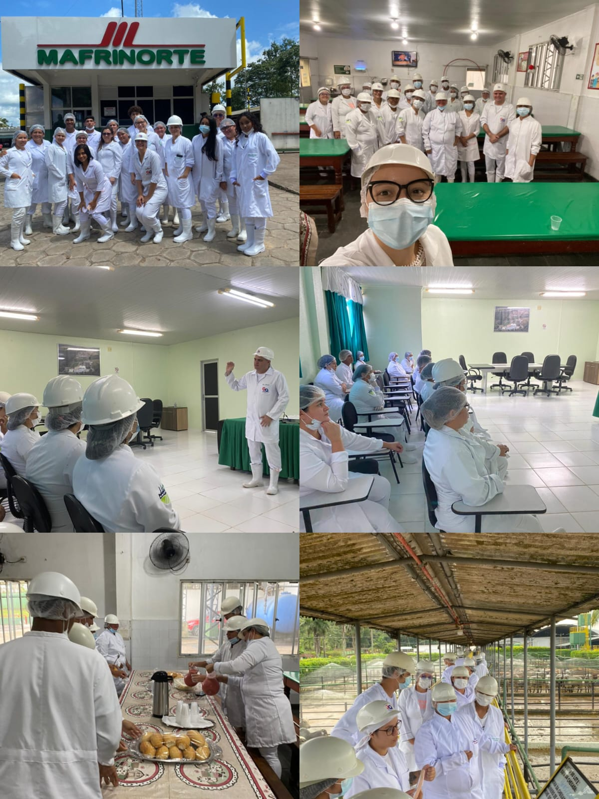
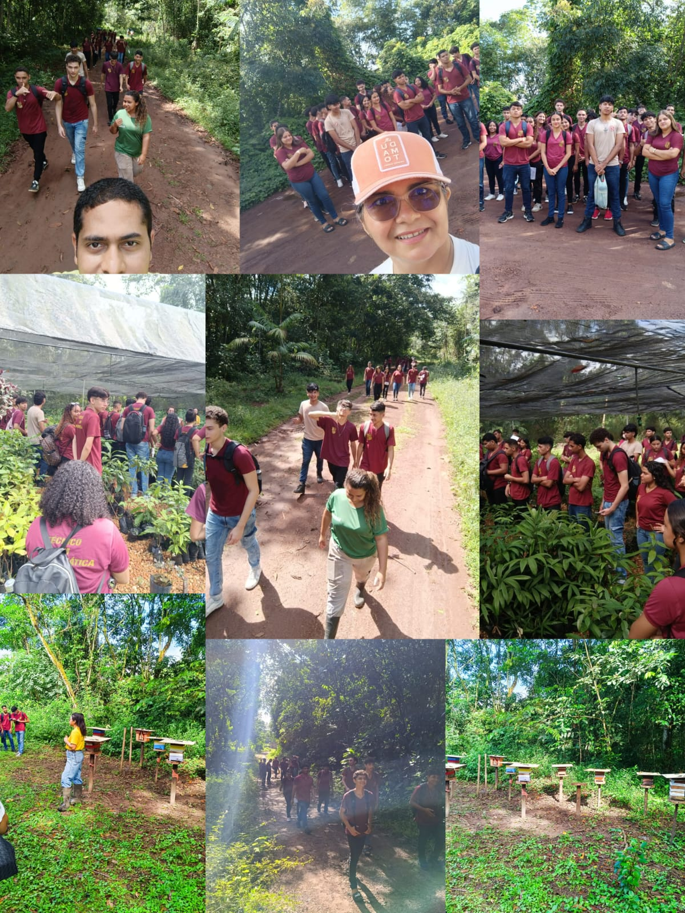
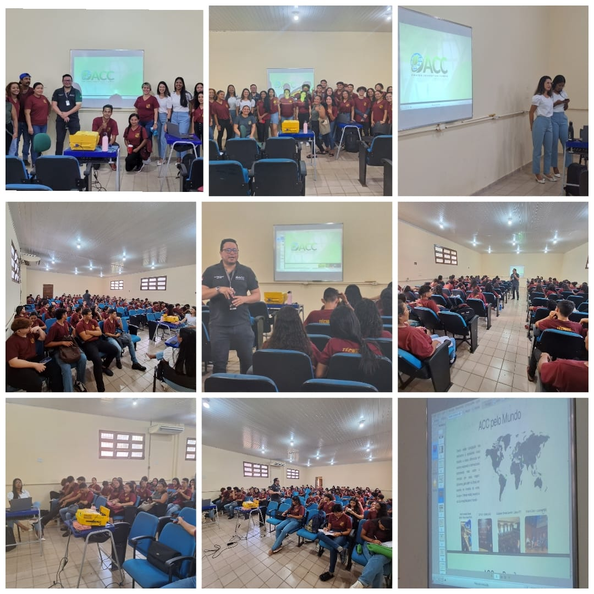

PODCAST
Novidaes do Jk, e so escutar
oficina de benefíciamento de palmito da bananeira, referente ao projeto "Produção de Bananeira:Gerando Renda Sustentável e Conservação Ambiental nos Sistemas Agroflorestais (SAFs) coordenado pela professora Silvana Andrade, com a turma agronegócio 23A
Aula pratica No abatedouro Mafrinorte em Castanhal. Turmas : Agroindústria integrado 24b Agroindústria subsequente 24b Agroindústria 23b Orientação Professora Jéssica
Aula prática, turma informática 22 A. Parque Ambiental REVIS Metrópole da Amazônia é uma unidade de conservação do tipo Refúgio de Vida Silvestre de proteção Integral criado em 2010 com 6 367,00 hectares.. Orientação Professores Rodrigo e Silvana
Palestra sobre Mercado de Crédito de Carbono, com a empresa Amazon Connection carbon. Orientação Prof Andresa Soares. Turmas Floresta 23 e 24 e Meio Ambiente 24. #Foco na COP 30
Novidaes do Jk, e so escutar